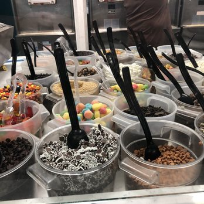
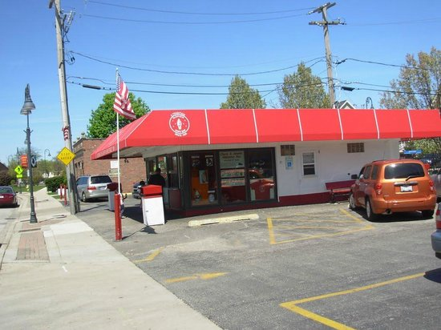
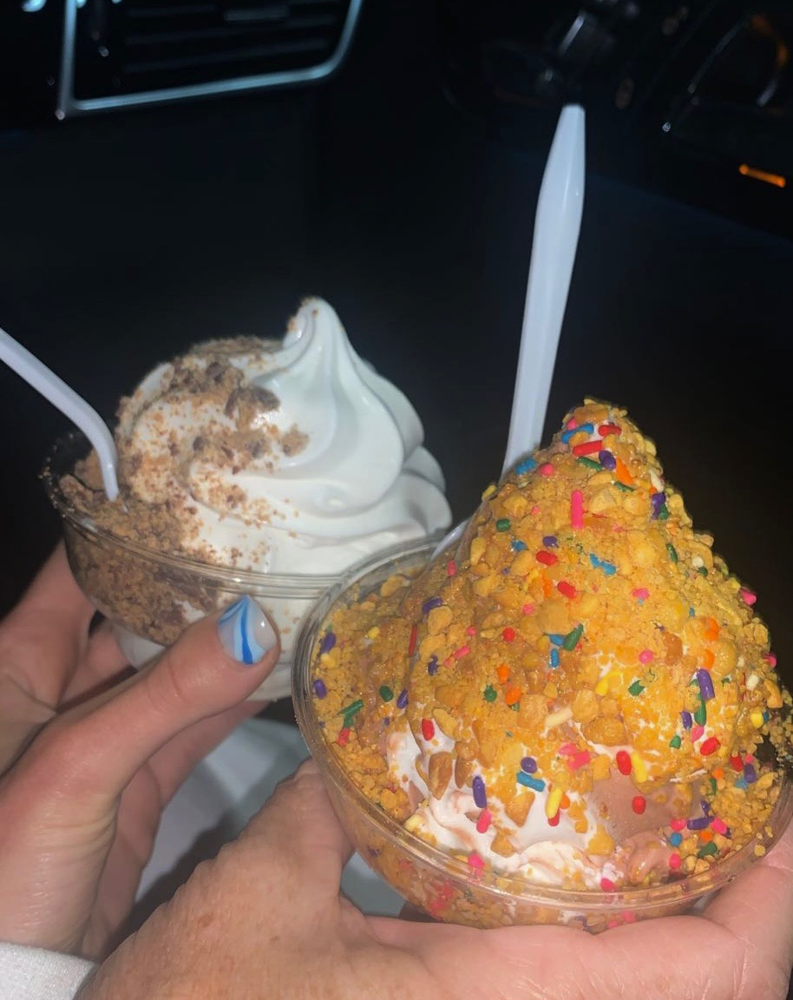
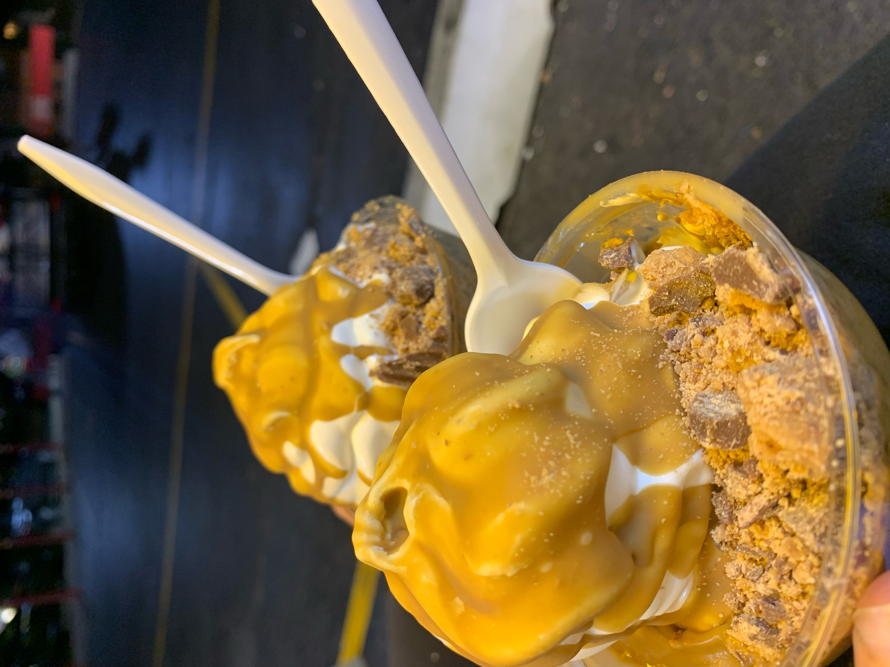
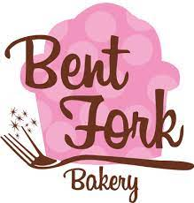
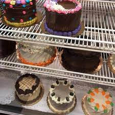
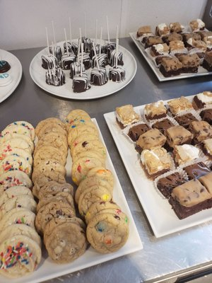
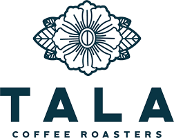

Love's Yogurt
Love's Yogurt is a local frozen-yogurt shop that also serves a salad, baked potato, and sandwhich bar. It has two locations, one in Highland Park and one in Glenview. Located at: 585 Elm Place Highland Park, IL 60035 & 2739 Pfingsten Glenview, IL 60025
Glenview Dairy Bar
Serving Glenview since 1955, Glenview Dairy Bar is a family walk-up soft-serve window. Known for its soft-serve, milkshakes, and other frozen treats, Dairy Bar is a family spot open from late March through early fall. Offering dip-cone flavors ranging from chocolate to peanut butter to cake batter, Dairy Bar's classic chocolate and vanilla soft serve flavors can be doctored up however a customer pleases. Be sure to stop for a cone if you happen to be in the area while in season! Located at: 1015 Harlem Avenue Glenview, IL 60025.
 Bent Fork Bakery
Bent Fork Bakery in Highwood is a small local bakery that makes handmade pastries from scratch daily. Specialties include: birthday cakes, cookies, pies, and wedding cakes. The bakery offers both vegan and gluten free menus, and offer nut-free options for those with allergies. Located at: 335 Waukegan Avenue, Highwood, IL
 Tala Coffee Roasters
Tala Coffee Roasters is a quaint, sit-down coffee roastery in Highwood, Illinois. Offering various coffees, teas, and seasonal drinks. Located at: 428 Green Bay Rd suite b, Highwood, IL 60040